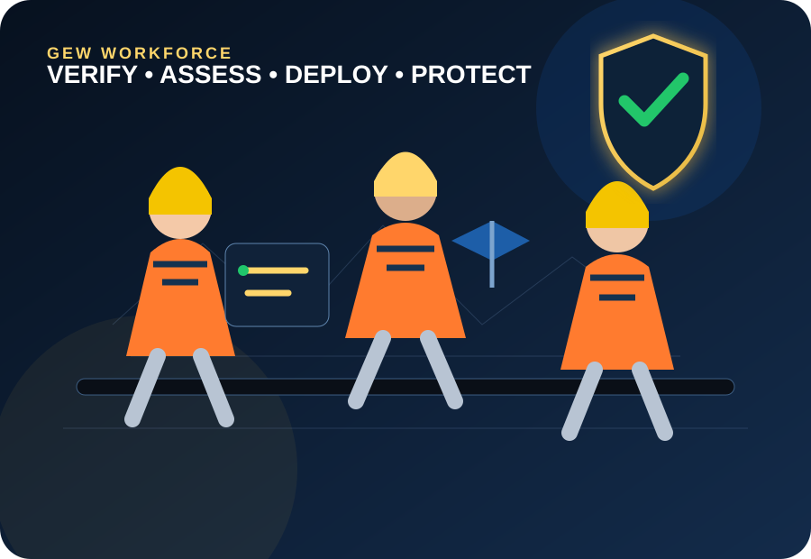

Health & Safety
Safety-focused site execution and continuous workforce awareness.
Gaytri Engineering Works is an Amritsar-based industrial mechanical contractor specializing in pulp and paper machinery, heavy fabrication, process pipelines, precision alignment, plant maintenance and technical manpower deployment.
From greenfield erection to planned shutdowns, our work is organized around safe execution, precision, coordination and practical site engineering. We support clients through fabrication, erection, alignment, piping modifications, electrical work, equipment maintenance and commissioning activities.
Ever since its inception, GEW has served as a loyal, permanent and primary engineering contractor for Khanna Paper Mills Ltd., supporting day-to-day plant maintenance, fabrication, erection, pipeline modifications, electrical and instrumentation support, precision roll changing and scheduled shutdown overhauls. GEW also deploys skilled and semi-skilled site manpower for recurring maintenance, shutdown and project requirements, including fitters, riggers, welders, electricians, instrumentation technicians, helpers and supervisors.
Plant support for recurring mechanical maintenance activities and equipment-related requirements.
Rapid-turnaround crews for planned shutdown work, replacements, repairs and overhauls.
On-site fabrication, erection and pipeline modifications coordinated with plant operations.
Electrical support, instrument installation assistance, field-device work, cabling, tubing and maintenance coordination for plant operations.
Large-scale deployment of riggers, fitters, welders, electricians, instrumentation technicians, helpers and supervisors for maintenance and shutdown requirements.
Our site teams combine practical engineering, workforce coordination and structured execution for demanding industrial environments.
Safety-focused site execution and continuous workforce awareness.

Precision-driven work backed by QA/QC and experienced supervision.

Coordinated manpower and resources for scheduled execution.

Organized coordination from mobilization through completion.
Need riggers, fitters, welders, electricians, electrical helpers or other technical labour in significant numbers? GEW can mobilize workforce for fabrication, erection, pipeline erection and dismantling, electrical work, instrumentation work, plant maintenance and shutdown activities, subject to project scope and availability.
Tell Us Your Manpower RequirementSkilled and semi-skilled manpower deployment for fabrication, erection, maintenance, shutdown, electrical and instrumentation work.
GEW builds its site teams around practical skill, verification, disciplined deployment and employee welfare. Before a worker is taken into regular deployment, the team reviews identity, experience and role suitability and uses a practical trial or assessment wherever required.
Identity, experience, role suitability and relevant documentation are checked before manpower is deployed to an industrial site.
Workers can undergo a practical trial or skill assessment before continued deployment so the right person is matched to the right industrial requirement.
Eligible employees are supported through applicable statutory ESIC and PF/EPF benefits in line with company and statutory requirements.
GEW places employee welfare at the centre of manpower deployment, including applicable health and social-security support for eligible team members.
Site teams follow safety-focused work practices, required PPE, toolbox communication, supervision and plant-specific safety requirements before and during execution.
Mechanical, electrical, instrumentation, fabrication, erection, maintenance and shutdown crews are coordinated according to the project's actual scope.
